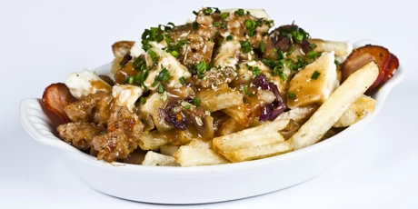

Greek Poutine!

Description
A Mediterranean twist to the French-Canadian classic!
Ingredients
- 2 large potatoes, cut into long slices
- 2 tablespoons olive oil
- 2 tablespoons chopped fresh mint
- 1 tablespoon Greek seasoning
- 1 teaspoon grated lemon zest
- salt and ground black pepper to taste
- 1 (8 ounce) package Cheddar cheese curds
- 1 cup gravy, or as desired
Steps
- Preheat oven to 400 degrees F (200 degrees C).
- Combine potato slices, olive oil, mint, Greek seasoning, lemon zest, salt, and pepper together in a resealable plastic bag; close and shake until evenly coated. Spread coated potato slices onto a baking sheet.
- Bake in the preheated oven until fries are crisp and browned, 40 to 60 minutes. Sprinkle cheese curds over fries and top with gravy